Halo: 智能摄影无人机交互设计
Intelligent Photography Drone That Avoids Non-Photographers
户外拍摄时路人闯入画面是摄影爱好者和自媒体博主的核心痛点。Halo 是一款智能摄影无人机概念设计，通过 3D 空间自由飞行实时监测环境、智能识别"非摄者"并灵活调整拍摄技法，同时以投影交互友好引导路人规避取景框，实现"全眼只有你"的拍摄体验。
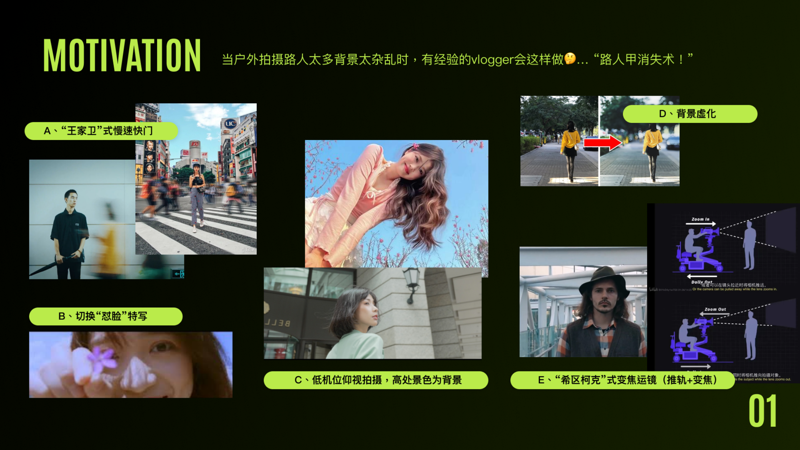
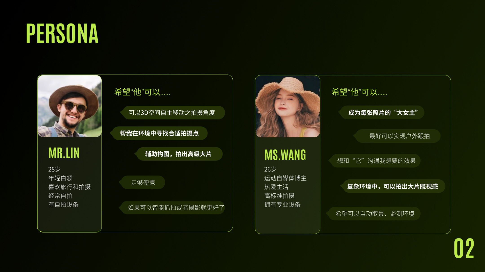
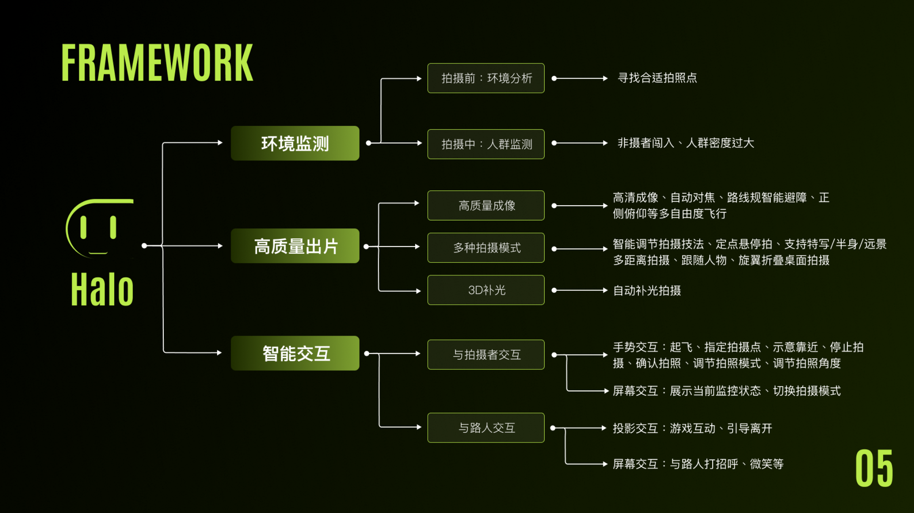
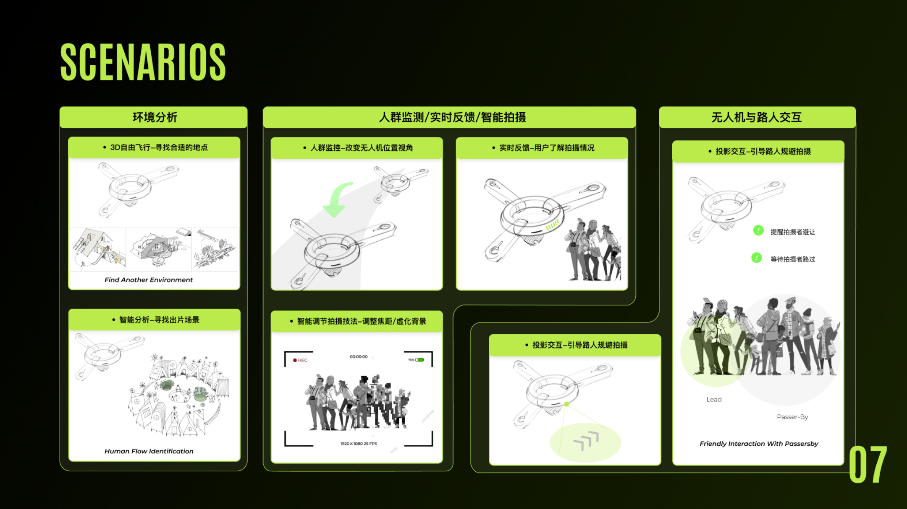
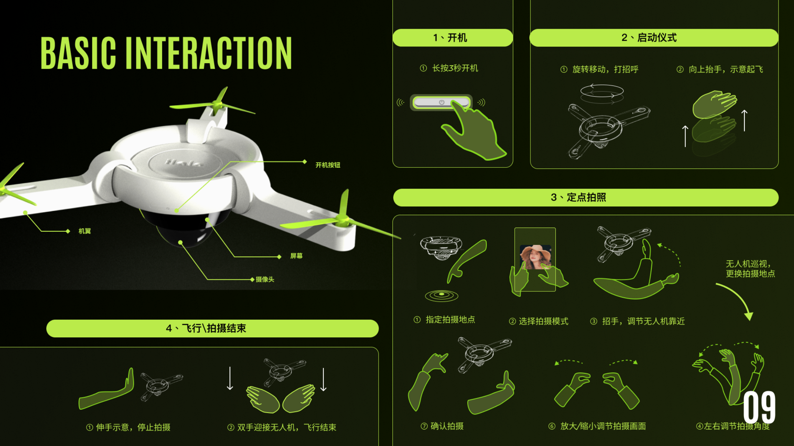
Enlighten: 光语人车交互系统
Refle Elf — Enlighten the Soul of Your Car
面向 2030 自动驾驶时代的人车情感交互方案。传统车辆在上车前、乘车中、下车后三个阶段缺乏情感连接和反馈。Refle Elf 以"光"作为核心交互媒介（兼具空间感、灵活性、无入侵性、弱提示的特征），设计了一套涵盖信息可视化、照明辅助与氛围陪伴三大功能的车内光语交互系统，将汽车从出行工具升级为 Soul Mate。
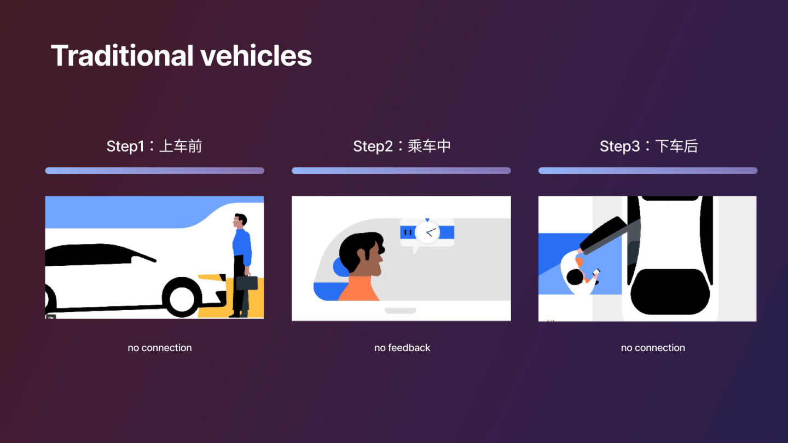
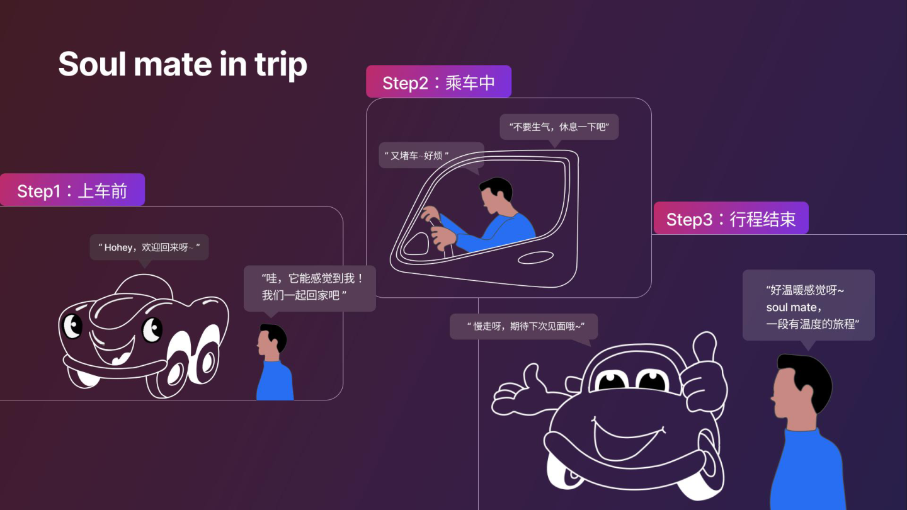
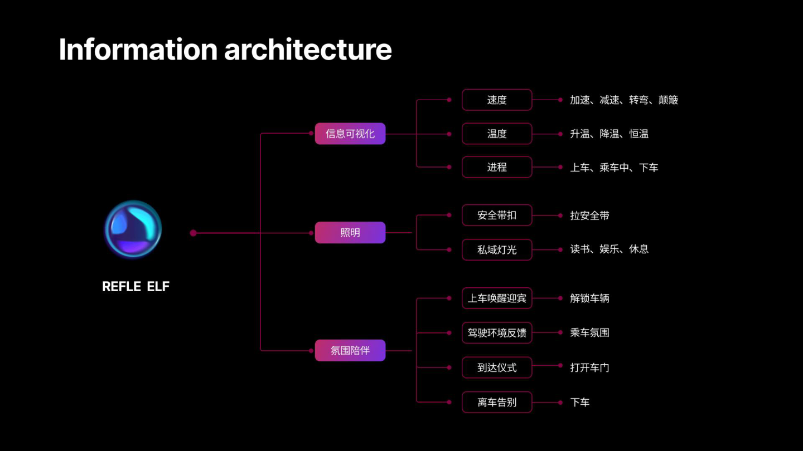
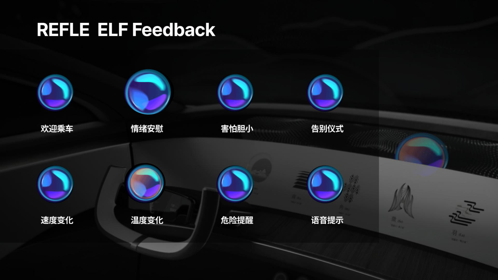
VR 空间认知障碍康复游戏
VR-Cognitive Rehabilitation for Alzheimer's Patients
面向早期阿尔茨海默症患者设计的 VR 空间认知康复游戏。通过结合认知训练与运动训练，在虚拟自然环境中设置空间导航、方位训练、记忆训练和拉伸运动等游戏任务，帮助患者改善空间认知能力和平衡姿态。游戏支持个性化难度调节，可由疗养师或家属根据患者病情定制康复方案。
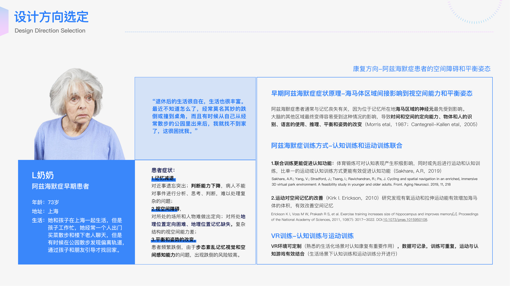
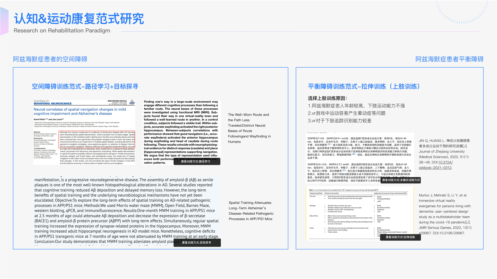
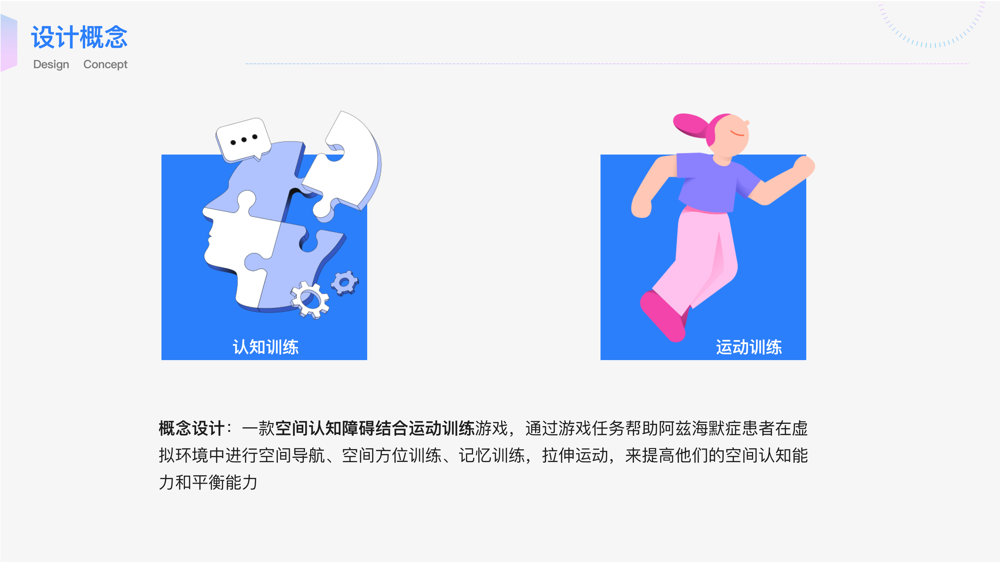


电商搜索体验的数据驱动设计
Data-Driven Design Optimization for E-commerce Search
以淘宝搜索功能为研究对象，运用数据分析方法论驱动设计优化。从业务诉求（促成交易）和用户诉求出发，确立"搜索订单渗透率"和"CTCVR（曝光-下单转化率）"为核心指标，通过用户旅程图拆解搜索全流程，设计前端交互方案并建立完整指标体系与埋点方案，实现以数据闭环指导设计迭代。
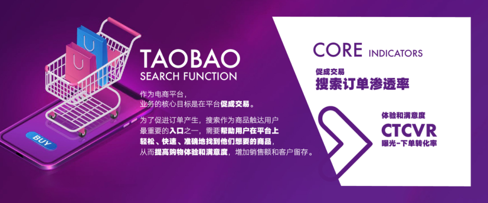
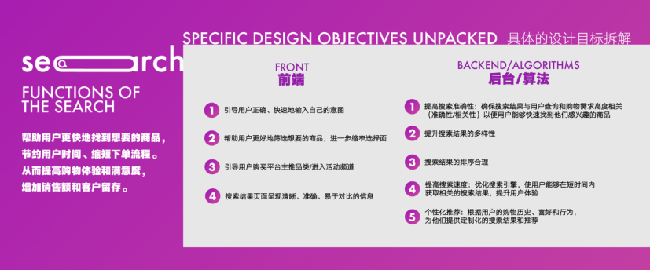
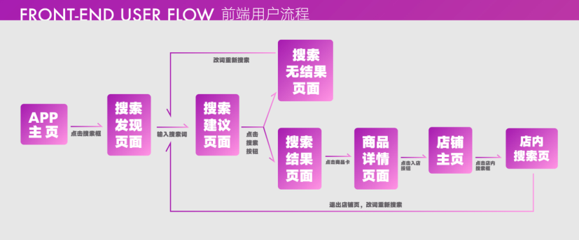
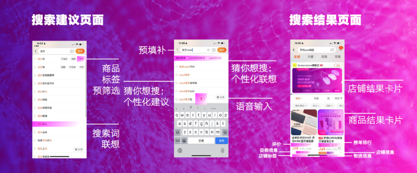
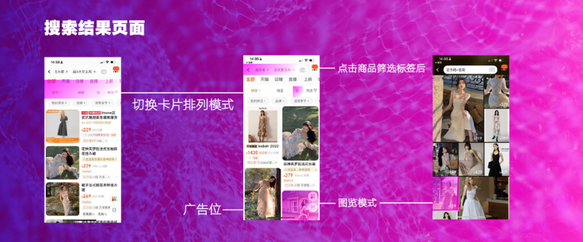
EMO-D: 情感钻石品牌创新设计
Emotional Diamond — A Moment Is Forever
EMO-D (Emotional Diamond) 是面向 Z 世代"新奢品先锋者"的培育钻石首饰品牌。融合 AIGC 技术与情感数据，通过 PAD 情感模型提取用户情绪，经由 AI 情感光谱轮和 GPT-4 情感作诗生成个性化的"情感钻石"，将情感数据转化为独一无二的珠宝设计。品牌核心理念"此刻 · 永恒"，让每一颗钻石承载佩戴者的真实情感。